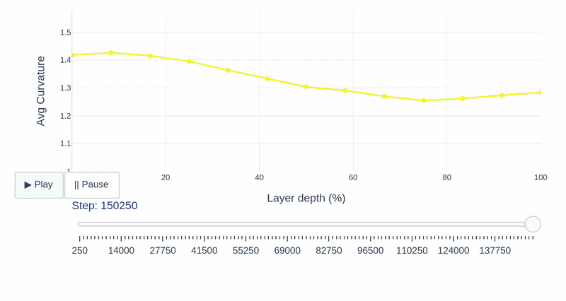
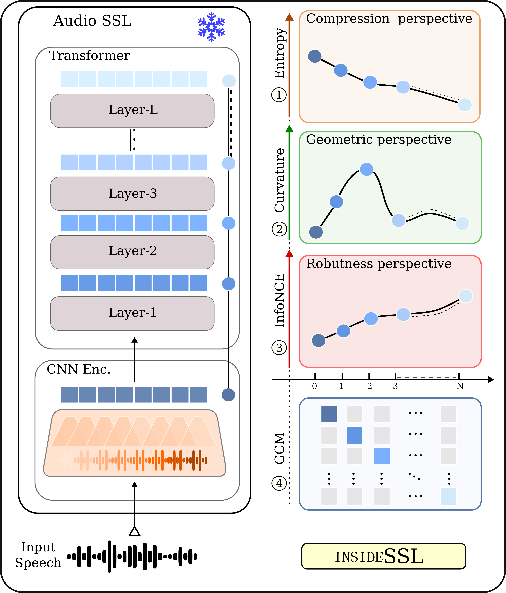
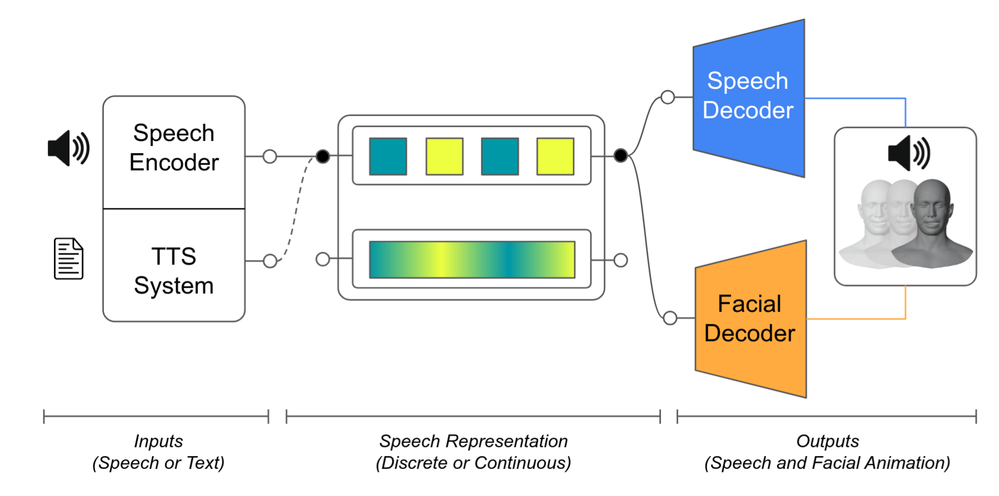
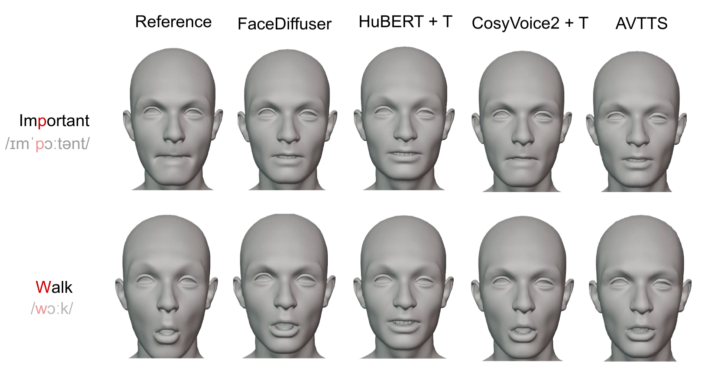
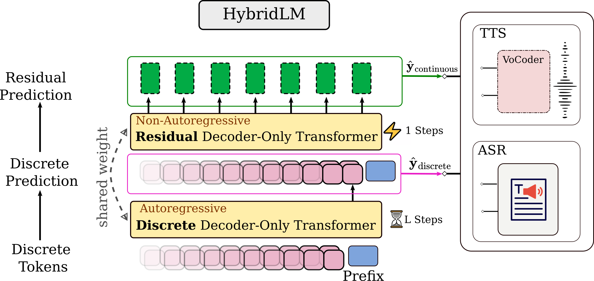
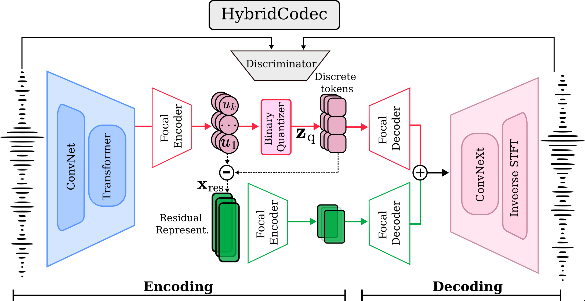

Samir Sadok
I am a postdoctoral research scientist at
INRIA
in Grenoble, France, under the supervision of
Xavier Alameda-Pineda.
I completed my PhD at
CentraleSupélec,
advised by
Simon Leglaive.
My research focuses on generative modeling, multimodal learning, speech processing,
and information geometry. I also design and teach courses on multimodal deep learning
and attention mechanisms.
News
Thesis
Audiovisual Speech Representation Learning Applied to Emotion Recognition
This thesis develops unsupervised and self-supervised generative models for multimodal and sequential audiovisual speech, learning disentangled latent representations that enhance interpretability and enable effective emotion recognition, signal analysis, transformation, and generation.
Research
My research focuses on multimodal generative models for audiovisual speech. I aim to develop interpretable generative models to enhance data analysis, control, and generation.


This study provides a layer-wise analysis of speech SSL models (Wav2Vec2, HuBERT, and WavLM), characterizing their compression, geometry, and robustness properties while assessing cross-layer functional transferability to reveal how their internal structure shapes the encoding of phonemes, pitch, and speaker identity.


Evaluating four speech representation families for 3D facial synthesis, we found that phonetic encoding in semantic and label-based representations is vital for accurate facial animation. Building on this, we introduce an AVTTS pipeline using shared discrete representations to simultaneously decode high-quality speech and 3D facial motion.


To address discretization loss in multimodal LLMs, we propose a hybrid framework combining temporally compressed discrete tokens with dimensionality-reduced continuous residuals via a focal modulation codec.


Neural audio codecs jointly encode gain and shape in a single latent space, making them sensitive to level variations and inefficient in bitrate–distortion performance. We introduce a shape–gain decomposition that separately quantizes the gain and processes the normalized shape with the codec, significantly improving efficiency and reducing complexity.


RT-MAE leverages Perceiver-style cross-attention to extract unsupervised residual tokens that capture natural speech nuances like timbre and emotion. A dropout-based regularization strategy (τ) ensures these tokens enhance expressivity without compromising the interpretability or controllability of explicit attributes.


Neural audio codecs efficiently encode continuous speech waveforms into low-rate discrete units but often lack interpretability because they are optimized mainly for reconstruction. This work introduces a two-step approach—analysis and synthesis—using AnCoGen to understand how speech attributes (content, identity, pitch) are encoded and to extract them directly from codec tokens.


This article presents AnCoGen, a unified masked-autoencoder model that can analyze, control, and generate speech from key attributes such as speaker identity, pitch, content, and signal quality, demonstrating strong performance across analysis-resynthesis, pitch estimation and modification, and speech enhancement tasks.


This paper introduces VQ-MAE-AV, a self-supervised multimodal model that learns discrete audiovisual speech representations via masked autoencoders and vector-quantized VAEs, enabling state-of-the-art emotion recognition with minimal labeled data.


This study uses Transformer-based models on text and audio to uncover emotional latent spaces, showing that multimodal representations more closely replicate Russell’s circumplex model of affect and highlighting the benefits of combining modalities in emotion analysis.


This paper introduces MDVAE, a multimodal and dynamical variational autoencoder that learns disentangled audiovisual speech representations by separating static, dynamic, modality-specific, and shared latent factors through a two-stage unsupervised training pipeline—leveraging VQ-VAE features—and demonstrates strong performance in speech manipulation, audiovisual denoising, and low-label emotion recognition.


This paper presents VQ-MAE-S, a self-supervised speech model combining masked autoencoders and vector-quantized VAEs, which, when pre-trained on VoxCeleb2 and fine-tuned on emotional speech, achieves state-of-the-art performance in speech emotion recognition.


This work demonstrates that a VAE trained on unlabeled speech naturally encodes source-filter factors in orthogonal latent subspaces, allowing accurate, independent control of fundamental frequency and formants for speech transformation using only a few seconds of labeled synthetic data.